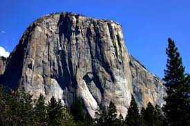
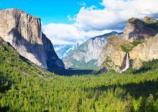
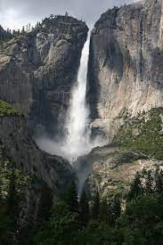
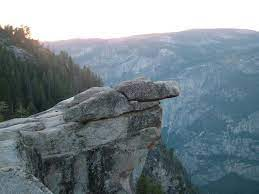

 El Capitan is a 3,000-foot (910 m) vertical rock formation in Yosemite National Park.
 Tunnel View looks east into Yosemite Valley.
 Upper Yosemite Falls are 1430 ft and are among the twenty highest waterfalls in the world.
 Handing Rock, of Glacier Point, used fot be a popular spot for people to, well, hang from. Crazy people.